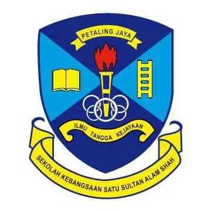

KINDERGARTEN SCHOOL
- School name:Tadika Pasti Nurul Iman
- Location:Pantai Dalam
- Year:2010
Kindergarten was an exciting and nervous time as i started an education. For a lot of people, was their first introduction to the world of socializing and studying away from home. Through storytelling, singing, and painting, i were able to form connections. Despite some hesitancy, such as waving goodbye to parents at the entrance, the excitement of learning new things and forming friendships made every day an unforgettable journey.

PRIMARY SCHOOL
- School name:SRA Abu Bakar As-Siddiq
- Location:Bangsar, Kuala Lumpur/li>
- Year:2011-2016
Starting at a Islamic primary school was a unique and enriching experience. It combined academic learning with a focus on spiritual and moral development, creating a balanced environment that nurtured both the mind and the heart.

PRIMARY SCHOOL
The start of primary school was a thrilling new chapter that was accompanied by some anxiety and excitement. In addition to studying subjects like science, history, and art, it was a period for learning fundamental skills like reading, writing, and math. In addition to academics, it was about forming new friendships, engaging in activities during recess, and gaining valuable life lessons like respect, cooperation, and accountability. Primary school was a memorable and life-changing time because of the combination of learning, development, and enjoyment.

HIGH SCHOOL
It was like entering a completely different planet when I started high school. High school represented the start of a more independent and self-directed stage of life, filled with new people, a variety of subjects, and extracurricular activities. It was a time to create long-lasting relationships, gain prepared for the future skills, and clarify one's purpose and goals.
DIPLOMA
University life is a life-changing experience that is defined by independent living, development, and exploration. It's an opportunity to enhance knowledge while studying a variety of topics and areas, frequently unrelated to one's initial major. I Increased freedom entails increased responsibility as I oversee my own social lives, schedules, and assignments. University is not only about education, Uni teach me that life can be lonely at times. Uni also teach that the previous chapter of my life was spmething that i should be grateful and life can be hard without my support system and home. Most of it is a bitter-sweet thing i should try to accept. One thing for sure is that, when everything is about to end, i will finally get why i am here.